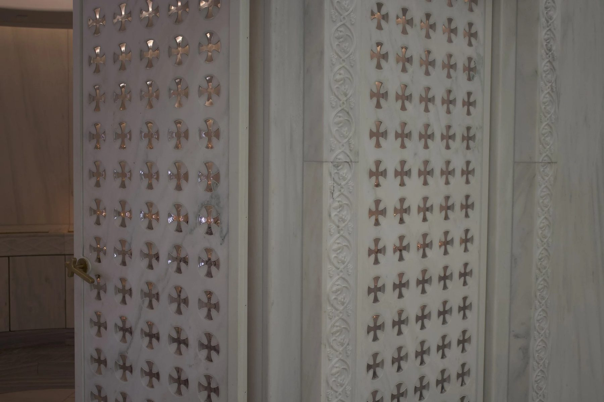
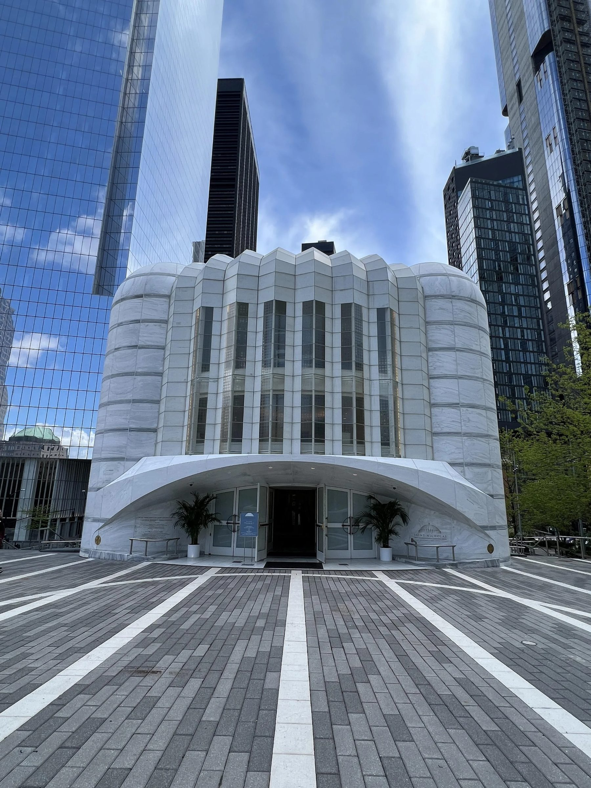
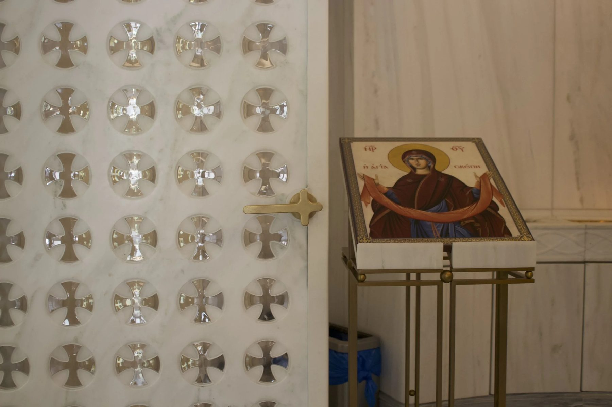
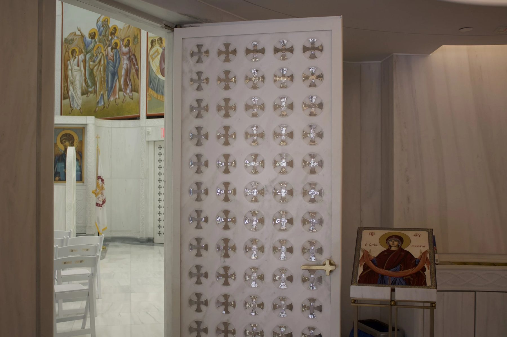
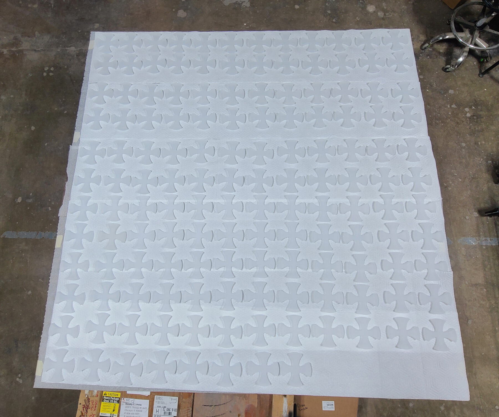
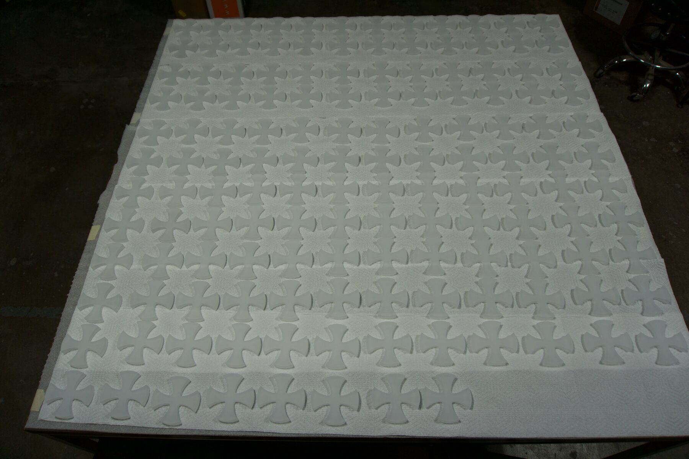
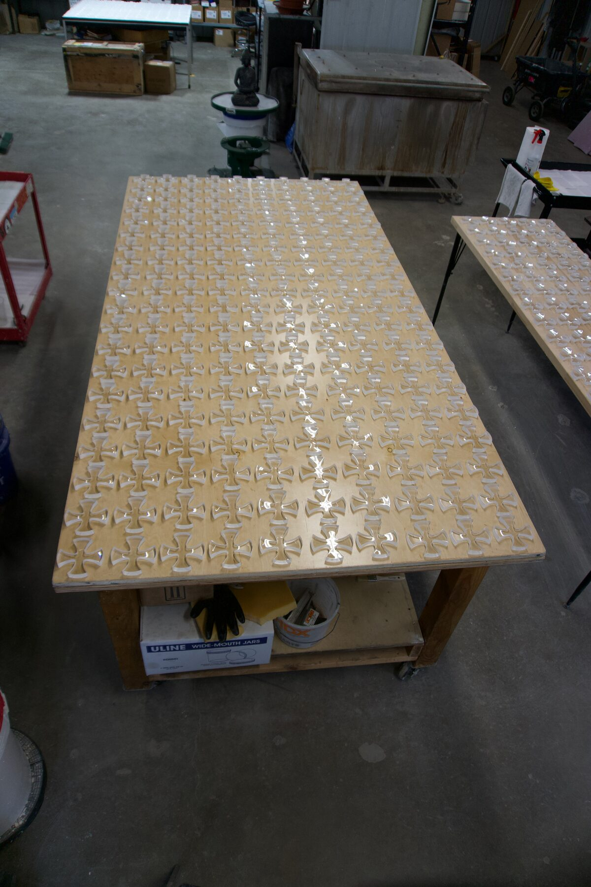
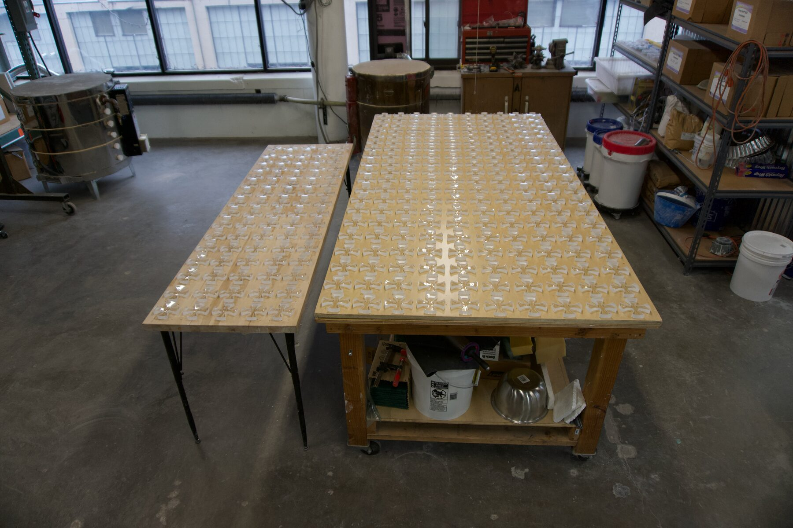
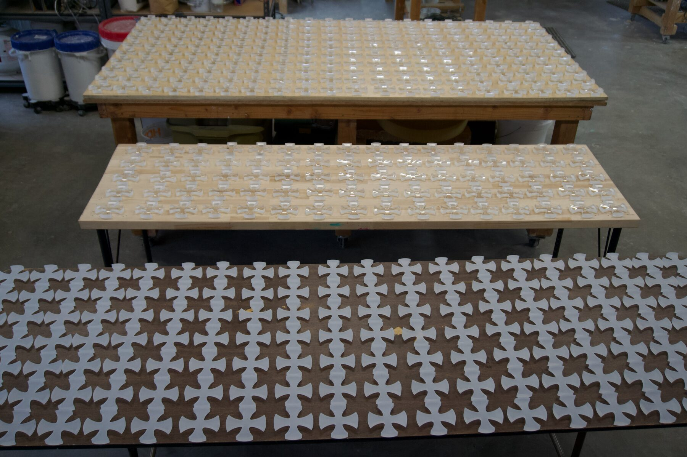

Glass / 2022 / New York, NY
Glass Crosses
St. Nicholas Greek Orthodox Church, National Shrine

Four hundred and twenty hand cast and polished glass crosses set into Pentelic marble doors at the 9/11 Memorial.
The work
St. Nicholas Greek Orthodox Church and National Shrine stands at the World Trade Center site. Santiago Calatrava's building joins Byzantine tradition with contemporary design, and its doors carry four hundred and twenty clear glass crosses set into marble. Transparency lets light pass through. In a sacred site rebuilt after September 11, that is the meaning.
The material question
The marble is from Mount Pentelicus, the quarry that supplied the Parthenon. It has long been closed, and using it requires sanction from both the Greek government and the church. Permission came because this small church had been the founding site of the Greek Orthodox Church in Manhattan. Every cross had to fit stone that cannot be replaced.
The making
Each cross was cast in optically clear leaded glass, cold worked, and polished by hand. Fit was solved in the model. The CNC cut openings in the marble did not match the drawings we had been sent, so we measured the first machined sample, rebuilt our models from the actual stone, and travelled to the site to confirm the openings there matched it. Only then did we produce the run. They all fit.
In place
“It was every craftsman's dream to be able to work on pieces that will last a lifetime in a sacred site,” says Ally Reza. There was reverence and care in each one, and it was an honor to be trusted with those materials and to set our glass within them.
Details
- Year
2022 - Location
New York, NY - Category
Glass - Materials
Optically clear leaded glass, Pentelic marble
Credits
- Architect: Santiago Calatrava
- Glass: Ally Reza
Studio
- ChiLab Studio
- Chicago, Illinois
- Established 2013








Bring us a drawing,
a model, or a hunch.
The studio
Specialty material projects for architecture, interior design, public art, and the fine arts.
ChiLab Studio, Chicago, Illinois. Established 2013.
What we do
- Metal casting
- Glass
- Finishes
- Digital fabrication
- Metal fabrication
- Restoration
- Project management
Contact
info@chilabstudio.com
chilabstudio.com
Instagram @chilabstudio